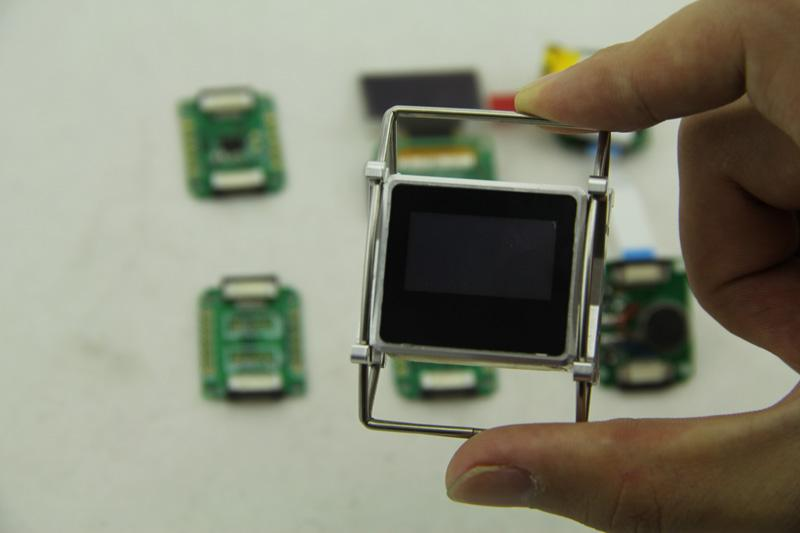

The Xadow Metal Frame is a well-made, reliable exoskeleton that protects and provides stability for your Xadow devices. It’s wearable and can withstand running, walking, hiking, or simply staying put. Customize your experience by adding various Xadow sensors.
Model: COM00300P
If you have already had our Xadow modules, then you can use the meter frame to assemble a wearable device. The blowing picture is the BOM.
About the assembling guide, please click here to see the specific steps. After assembling them by yourselves, you will get this:

It can be worn as an accessory as shown below:
Hey! Guys. Show off your any innovative APP for Xadow.
Xdow Metal Frame Assembly Guide
Copyright (c) 2008-2016 Seeed Development Limited (www.seeedstudio.com / www.seeed.cc)